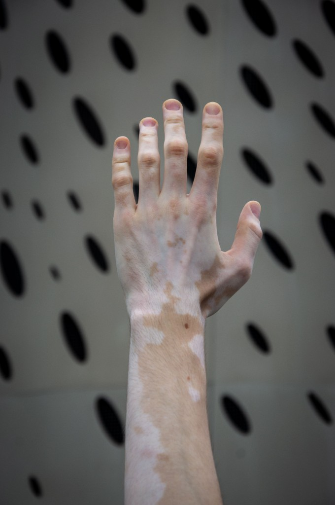

01
REVERSEPANDA
The name ReversePanda is more personal than it might seem.
I have vitiligo, including white patches around my eyes. At some point, I realized it was almost the reverse of a panda's black markings.
ReversePanda stuck.
Something that makes me different became the name of something I created.
